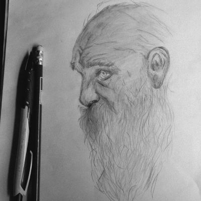
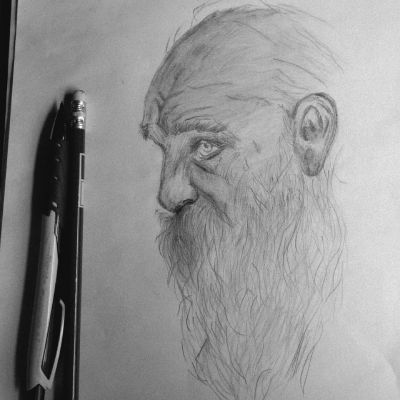

My hobbies include sports, drawing, and reading. Each of these activities has its own time and atmosphere, allowing me to fully enjoy each one in its unique way and in the moments that suit it best.
 
